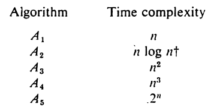
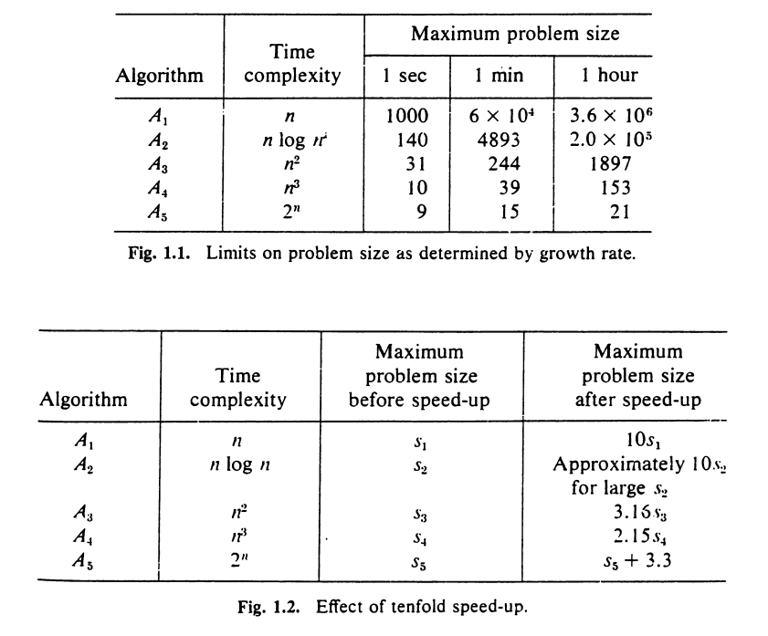

Complexity Analysis of Algorithm
Sudhanshu Dubey
D3 CSE B1 | 1706523
What !?
What’s an Algorithm?
It’s a
well defined
sequence of steps
to solve a problem.
Or basically instructions for the dumbest person in the world, the computer.
… and Complexity?
the state of being difficult to understand
Complexity of Algorithm
Analysis helps us to understand
how difficult it is for the computer to understand/implement the algorithm
.
Why !?
Why complexity analysis?
A problem maybe solved using various algorithms.
We need to find the best way of solving the problem so that minimum resources are used up.
… even with superfast computers?
Absolutely!!!
Let’s take an example. A problem can be solved using these algorithms:


So it’s clear from above that using a more efficient algorithm is much more benificial than having a faster processor.
How !?
How to find complexity?
There are 2 types of complexities that we are intrested in:
Space Complexity
Time Complexity
Both of these complexities can be evaluated using various criteria, but we will be focusing on the
rate of growth
.
Rate of growth is basically how much the complexity changes w.r.t the input size.
How to find rate of growth?
We have to realize that the idea of complexity is an abstract one and no value can be actually associated with it.
We can only relatively compare the growth of our algorithms with the growth of some mathematical function.
And for this comparison, we use
Asymptotic Notations
.
Thanks